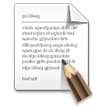
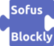

SofusPy (de Sofus/Blockly vers Python) Modes Cet outil comprend deux modes : En mode Blockly, on place des blocs pour construire un programme (comme avec Scratch) En mode Python, on écrit un programme Python Chaque fois qu'on clique sur le bouton "éditeur", on passe d'un mode à l'autre. Attention: Le passage de Python à Blockly efface le code Python Executer Ouvrir Sauver Editeur  Commandes Demo 1 Executer Ouvrir Sauver  Retour Commandes